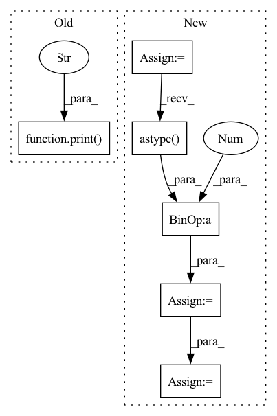

Pattern ID :38877
Before Change
// Initialize the super-resolution model
print("Build RRDBNet model...")
model = Generator().to(config.device)
print("Build RRDBNet model successfully." )
// Load the super-resolution model weights
print(f"Load RRDBNet model weights `{os.path.abspath(config.model_path)}`...")
state_dict = torch.load(config.model_path, map_location=config.device)After Change
// Save image
sr_image = imgproc.tensor2image(sr_tensor, range_norm=False, half=True)
sr_image = cv2.cvtColor(sr_image, cv2.COLOR_RGB2BGR)
cv2.imwrite(sr_image_path, sr_image)
// Cal PSNR
sr_image = sr_image.astype( np.float32) / 255.
sr_y_image = imgproc.bgr2ycbcr(sr_image, use_y_channel=True)
sr_y_tensor = imgproc.image2tensor(sr_y_image, range_norm=False, half=True).to(config.device).unsqueeze_(0)
total_psnr += 10. * torch.log10(1. / torch.mean((sr_y_tensor - hr_y_tensor) ** 2))
In pattern: SUPERPATTERN
Frequency: 3
Non-data size: 6
Instances Fragment ID: 110944444
Project Name: lornatang/esrgan-pytorch
Commit Name: 087e0c9bc621989889918b52b7c0dba9485c5fd6
Time: 2022-03-06
Author: liuchangyu1111@gmail.com
File Name: validate.py
M Class Name: AnonimousClass
N Class Name: AnonimousClass
M Method Name: main(0)
N Method Name: main(0)
M Parent Class:
N Parent Class:
M File Name: validate.py
N File Name: validate.py
M Start Line: 28
M End Line: 82
N Start Line: 30
N End Line: 91
Before Change
def main() -> None:
// Initialize the super-resolution model
print("Build SRGAN model..." )
model = Generator().to(config.device)
print("Build SRGAN model successfully.")
// Load the super-resolution model weightsAfter Change
// Save image
sr_image = imgproc.tensor2image(sr_tensor, range_norm=False, half=True)
sr_image = cv2.cvtColor(sr_image, cv2.COLOR_RGB2BGR)
cv2.imwrite(sr_image_path, sr_image)
// Cal PSNR
sr_image = sr_image.astype( np.float32) / 255.
sr_y_image = imgproc.bgr2ycbcr(sr_image, use_y_channel=True)
sr_y_tensor = imgproc.image2tensor(sr_y_image, range_norm=False, half=True).to(config.device).unsqueeze_(0)
total_psnr += 10. * torch.log10(1. / torch.mean((sr_y_tensor - hr_y_tensor) ** 2))
Fragment ID: 110944445
Project Name: lornatang/srgan-pytorch
Commit Name: 231bd74d21d7f532fd746f4a1cb8fb3bc008c933
Time: 2022-03-03
Author: liuchangyu1111@gmail.com
File Name: validate.py
M Class Name: AnonimousClass
N Class Name: AnonimousClass
M Method Name: main(0)
N Method Name: main(0)
M Parent Class:
N Parent Class:
M File Name: validate.py
N File Name: validate.py
M Start Line: 28
M End Line: 82
N Start Line: 33
N End Line: 91
Before Change
def main() -> None:
// Initialize the super-resolution model
print("Build SRCNN model..." )
model = SRCNN().to(config.device)
print("Build SRCNN model successfully.")
// Load the super-resolution model weightsAfter Change
total_files = len(file_names)
for index in range(total_files):
lr_image_path = os.path.join(config.lr_dir, file_names[index])
sr_image_path = os.path.join(config.sr_dir, file_names[index])
hr_image_path = os.path.join(config.hr_dir, file_names[index])
print(f"Processing `{os.path.abspath(lr_image_path)}`...")
// Make low-resolution image
lr_image = cv2.imread(lr_image_path).astype( np.float32) / 255.0
lr_image_height, lr_image_width = lr_image.shape[:2]
lr_image_height_remainder = lr_image_height % config.upscale_factor
lr_image_width_remainder = lr_image_width % config.upscale_factor
lr_image = lr_image[:lr_image_height - lr_image_height_remainder, :lr_image_width - lr_image_width_remainder, ...]
lr_image = imgproc.imresize(lr_image, 1 / config.upscale_factor)
lr_image = imgproc.imresize(lr_image, config.upscale_factor)
Fragment ID: 110944447
Project Name: lornatang/srcnn-pytorch
Commit Name: 919c5e6f1c9d9f4b355873199e155b50b2f04104
Time: 2022-03-17
Author: liuchangyu1111@gmail.com
File Name: validate.py
M Class Name: AnonimousClass
N Class Name: AnonimousClass
M Method Name: main(0)
N Method Name: main(0)
M Parent Class:
N Parent Class:
M File Name: validate.py
N File Name: validate.py
M Start Line: 29
M End Line: 70
N Start Line: 51
N End Line: 75